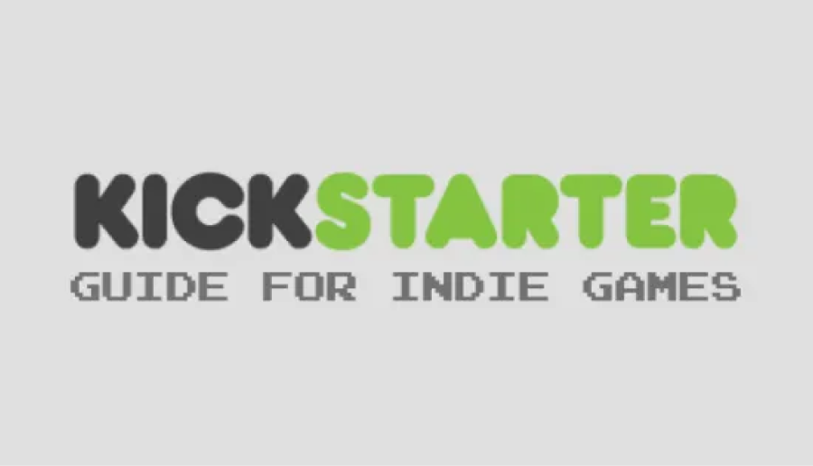

The gaming industry has undergone a massive transformation over the last few years, and indie gaming is at the
forefront of this revolution. Indie gaming has become a booming industry in recent years, and it's not hard to
see why. With the rise of digital distribution platforms like Steam, indie developers now have the opportunity
to reach a massive audience, and gamers have access to a wide variety of unique and innovative games.
Indie games are defined as games that are developed and published independently, without the backing of a major
publisher. These games are often created by small teams or even individual developers, and they frequently explore
new ideas and concepts that aren't typically seen in mainstream games. Indie games often have lower budgets and
shorter development times, which means they can take more risks and experiment with different gameplay mechanics.
One of the main advantages of indie games is that they often provide a refreshing change of pace from the endless
sequels and remakes that dominate the mainstream gaming industry. Indie games are known for their creativity and
originality, and they often tackle complex themes and issues that aren't typically explored in mainstream games.
The indie gaming revolution has been fueled in part by the rise of digital distribution platforms like Steam,
which make it easier for indie developers to get their games in front of a massive audience. These platforms allow
developers to publish their games without having to go through the traditional publishing channels, which can be
expensive and time-consuming.
Another factor driving the indie gaming revolution is the rise of crowdfunding platforms like Kickstarter. These
platforms allow indie developers to raise money from fans and supporters to fund their projects. This has enabled
many small indie studios to create ambitious games that wouldn't have been possible otherwise.
The success of indie games has also been fueled by the growing demand for games that are more inclusive and
diverse. Indie developers are often more willing to take risks and explore new ideas, which has led to a wider
range of games that appeal to different audiences. Indie games have also been at the forefront of exploring themes
like mental health, social justice, and LGBTQ+ issues.
The indie gaming revolution has had a profound impact on the gaming industry as a whole. It has challenged the
traditional publishing model and created new opportunities for small developers to create innovative and engaging
games. Indie games have also helped to push the boundaries of what is possible in terms of storytelling and
gameplay mechanics.

In conclusion, the indie gaming revolution has transformed the gaming industry and opened up new opportunities
for developers and gamers alike. With digital distribution platforms and crowdfunding, indie developers have more
tools than ever to create the games they want to make, and gamers have access to a wider variety of unique and
innovative games than ever before. As the gaming industry continues to evolve, indie games will undoubtedly play
an even bigger role in shaping its future.